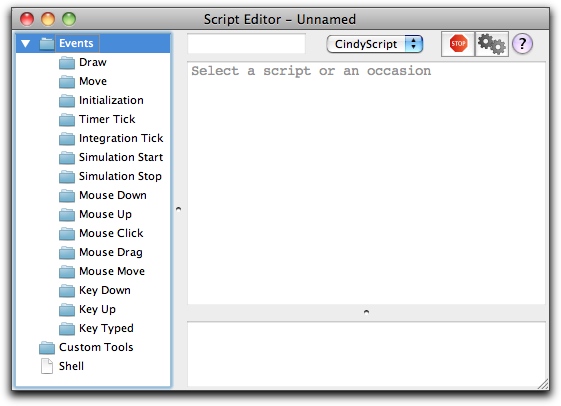
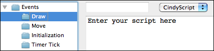
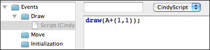

Scripting the Seeds of a Sunflower
In this tutorial you will learn some elementary applications of CindyScript, the internal Programming language of Cinderella. You should be aware that this tutorial covers only a very small portion of the CindyScript functionality. Nevertheless, you will receive an impression of how CindyScript can be used.
The following example will be developed step by step. In each step we will add one conceptually new element. At the very end we will arrive at an interactive visualization of the packing pattern of seeds in a sunflower head.
A first line of CindyScript
We start with an extremely simple task. We want to draw one point by CindyScript that is bound to a given geometric point. We start by adding one point using the add a point mode
 . It is a good idea for the following example to also turn on the snap grid by pressing the button
. It is a good idea for the following example to also turn on the snap grid by pressing the button  in the button line below the drawing surface. After this step your drawing should look like Figure 1.
in the button line below the drawing surface. After this step your drawing should look like Figure 1. |
| Figure 1: A single point |
CindyScript is (among other things) capable of adding graphical elements to your construction. Now we want to draw a single point displaced by (1,1) from point A. In order to achieve this we must open the CindyScript editor in the menu Scripting --> Edit Scripts. Then the window shown below will pop up. This is where CindyScript code is entered primarily.
 |
| Figure 2: The script editor |
You will notice that on the left side of this window there is a list of many occasions. Each piece of CindyScript is associated to one of these occasions and will be executed when a corresponding event occurs. We will add a piece of script in the draw event. This means that the script will be executed right before drawing. This is the right place to add code that produces additional graphical output. For adding the piece of code we click on the draw event (see Figure 3).
 |
| Figure 3: Entering code in the draw event |
After this we can add a piece of code in the main part of the editor. To draw the desired point the code snippet shown in Figure 4 is already sufficient.
 |
| Figure 4: A first line of CindyScript |
We will comment on this line of code briefly. The
draw(...) statement accepts a two-dimensional vector. It will draw a point at the corresponding position on the drawing surface. By default this point will be green and small. (It is also possible to use the draw statement with two vectors as arguments. Then a segment between the two corresponding points will be drawn.) In our code the argument is A+(1,1). This summation statement will automatically use the xy-coordinates of point A. To these coordinates we add the vector '(1,1)'. In arithmetic expressions geometric elements are automatically cast into their coordinates.After entering the line of code you must press the script start button (the one with the two gears) in the script editor. After this your drawing should approximately as shown in Figure 5.
 |
 |
| Figure 5: Drawing a point |
Loops
Now we will add a simple control structure to our script. Instead of one single point we want to draw a whole sequence of points. For this we will use the
repeat(...) statement to generate a simple loop. repeat(...) can be used with three arguments. The first one is the number of loops. The second is the name of the running-variable. The last argument is the piece of code that will be executed during the loop. The arguments are separated by commas. In our case we will use the piece of code shown in Figure 6. (Remember to press the start button again to activate the changes to your script.) |
 |
| Figure 6: A loop that draws points |
This code draws all together 10 points. The variable
i is used as running-variable. During the loop it assumes values 1,2,3,4,5,6,7,8,9,10. In contrast to the last step we now calculate the vector A+(i,i). All together this creates a diagonal chain of points.In the next step we want to place the point cyclically around point A. The distance from A should be 1 and the points should have an angular displacement of 10°. For this we define a new variable
w that plays the role of the angle. We add the line w=i*10° to our loop. This automatically creates the variable w (there is no need of an explicit typing) and associates the angle to it. Then we change our code by adding the vector (sin(w),cos(w)). The result is shown in Figure 7 below. |
 |
| Figure 7: Drawing points in a circle |
Adding a slider
We now want to interactively control the number of points added by a slider in the drawing surface. Sliders are constructed explicitly as geometric objects. For this one usually adds a line segment and places a point on it. However also other types of sliders (for instance circular sliders) are possible variants. We add a simple segment by using the add a segment
 mode. The endpoints of this segment will be B and C. Then we add a point on this segment by using the add a point mode. This point will be point D. We will now use the distance from C to D as a controlling entity for the number of points. The distance can be measured by
mode. The endpoints of this segment will be B and C. Then we add a point on this segment by using the add a point mode. This point will be point D. We will now use the distance from C to D as a controlling entity for the number of points. The distance can be measured by |C,D|. We multiply this value by 10 and round it to get the value n of number of points to be drawn. This can be done using the simple expression n=round(|C,D|*10). Again observe that no explicit declaration of variables or typing is necessary. Variables like n are simply containers for values, no matter what these values may be. We furthermore have to change the number of loops from the value 10 to n. The corresponding piece of code together with a picture of the current state of our drawing is shown in Figure 8. In this drawing the number of points can be controlled interactively by moving point B. |
 |
| Figure 8: Adding a slider |
A strange angle
We will now do something the importance of which may not be clear immediately. We change the angular displacement to a value of 137,508°. The result of this action is shown in Figure 9 below.
 |
 |
| Figure 9: A "strange" angle |
The points seem to be distributed almost randomly. In fact the value of 137,508° has a certain mathematical meaning. It is 360° times the square of the golden ratio. It has the strange property that it scatters the points in an kind of optimal way. Each new point is placed in a position that is as far away from the previous points as possible. We can see this by changing the distance of each point to the center A. A good choice of this radial displacement is sqrt(i)*0.2. We do so by multiplying the vector we add by a factor
r that we set to this value. The result is shown in Figure 10. Observe that the points in the drawing are placed in a way that each of the points has approximately the same amount of free space around itself. |
 |
| Figure 10: Adjusting the radii |
Let us be ambitious and increase the number of points significantly. We change our factor 10 in the first line to a value of 80. We recommend to move the points A and D to see the speed of the visualization. A Situation with roughly 400 points is shown in Figure 11.
 |
 |
| Figure 11: Much more points |
Spirals in a sunflower
The points we drew are roughly positioned like the seeds in the head of a sunflower. You will also observe the typical spiral structures that one sees in a sunflower. The angular displacement factor of 137,508° is crucial for this pattern. We will exemplify this by slightly disturbing this angle and seeing what happens. For this we add another slider with which we can control the amount of disturbance. We again draw a segment with a point on it and add define a (small!) disturbance value by
dd=|E,G|*0.1°. We add this value to the angular displacement, by changing the angle to w=i*(137.508+dd). The effect of such a small disturbance is shown in Figure 12. We observe the ever so slightly changing the angular displacement results in the appearance of obvious spiral structures in the placement of the seeds. |
 |
| Figure 12: Disturbing the angle |
The number of spirals is intimately related to the golden ratio and its development by continued fractions. We will not elaborate on this (quite deep) mathematical structure. We just mention that the so-called Fibonacci numbers 1,1,2,3,5,8,13,21,34,... come into play. Here each number is the sum of its two predecessors. Dividing two consecutive Fibonacci numbers by each other gives a better approximation of the golden ratio the larger these two numbers are. Amazingly the number of prominent spirals will be a Fibonacci number (pick a real sunflower and check it!).
We will exemplify this by changing the color of the points in our visualization. Many CindyScript functions (and in particular
draw(...)) allow for the use of so called modifiers. By using them one can for instance change the color, size or opacity of the element that is drawn. In our particular example we will add the following piece of code to the draw statement: color->hue(i/21). The function hue(...) creates a rainbow color with full saturation. While the argument runs from 0.0 to 1.0 the color will proceed a full cycle in the color circle. By setting the color to hue(i/21) we paint the seeds in colors that are cyclically with period 21 (a Fibonacci number). We visually observe that the disturbed pattern has 21 prominent spirals. |
 |
| Figure 13: Coloring the spirals |
Page last modified on Friday 02 of September, 2011 [16:46:32 UTC].
The original document is available at
http://doc.cinderella.de/tiki-index.php?page=Scripting%20the%20Seeds%20of%20a%20Sunflower